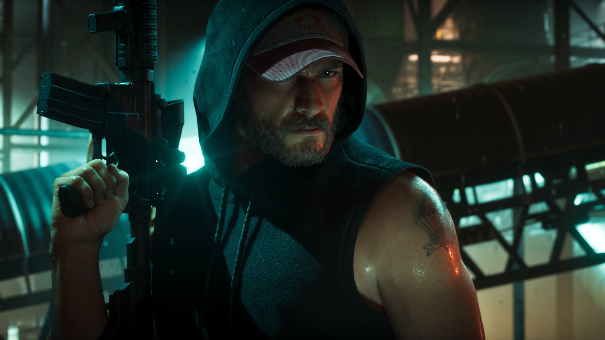

CONFIRMADO
Jason Duval
Jason cresceu cercado por golpistas e criminosos. Depois de uma adolescência problemática e de uma passagem pelo Exército, acabou nas Leonida Keys, trabalhando para traficantes locais.
Tudo sobre Jason
Grand Theft Auto VI leva a série de volta a Vice City e apresenta Jason Duval e Lucia Caminos no centro de uma história criminal que atravessa o estado de Leonida.
LANÇAMENTO CONFIRMADOGrand Theft Auto VI é o próximo grande título da série Grand Theft Auto, desenvolvido pela Rockstar Games. O jogo será lançado em 19 de novembro de 2026 para PlayStation 5 e Xbox Series X|S.
A aventura marca o retorno da franquia a uma versão moderna de Vice City, agora inserida no amplo estado fictício de Leonida.
Jason Duval e Lucia Caminos formam a dupla central da história. Depois que um serviço aparentemente simples dá errado, os dois acabam envolvidos em uma conspiração criminosa que se estende pelo estado e precisam confiar cada vez mais um no outro para sobreviver.
Jason e Lucia sabem que as probabilidades nunca estiveram exatamente a favor deles.
Quando um golpe aparentemente fácil dá errado, os dois acabam no lado mais sombrio de Leonida e no centro de uma conspiração criminosa que atravessa o estado.
A relação entre os protagonistas ocupa uma posição central na narrativa. Para conseguirem sair vivos da situação, Jason e Lucia terão que depender um do outro mais do que nunca.
Conhecer os personagens
Jason cresceu cercado por golpistas e criminosos. Depois de uma adolescência problemática e de uma passagem pelo Exército, acabou nas Leonida Keys, trabalhando para traficantes locais.
Tudo sobre JasonLucia aprendeu a lutar ainda jovem com o pai. Sua luta pela família acabou levando-a à Leonida Penitentiary. Agora em liberdade, ela está determinada a seguir seu plano para conquistar uma vida melhor.
Tudo sobre LuciaGTA VI apresenta uma versão moderna de Vice City, agora integrada ao estado de Leonida.
Praias, áreas urbanas, estradas, ilhas, regiões pantanosas e diferentes comunidades formam o cenário conhecido até agora.
Explorar o mapa
Acompanhe no GTA6Zoone os locais oficialmente apresentados e a evolução do nosso mapa.
Um dos protagonistas centrais de GTA VI.
ProtagonistaUma das protagonistas centrais de GTA VI.
Amigo de Jason e associado de Brian Heder.
Uma figura conhecida em Vice City.
Ligado à cena musical de Vice City.
Bae-Luxe e Roxy formam a dupla Real Dimez.
Um experiente assaltante de bancos.
Um veterano traficante das Keys.
A apresentação estendida de GTA VI foi publicada em 27 de agosto de 2026, mostrando mais de 20 minutos de gameplay capturado no PlayStation 5.
O segundo trailer ampliou a apresentação de Jason, Lucia, Leonida e do universo de GTA VI.
O primeiro trailer apresentou Vice City, Lucia e o cenário moderno de Leonida.
Grand Theft Auto VI tem lançamento marcado para 19 de novembro de 2026.
As plataformas oficialmente anunciadas são PlayStation 5 e Xbox Series X|S.
A pré-venda do jogo está disponível.
A história acompanha a dupla em uma conspiração criminosa pelo estado de Leonida.
A famosa cidade retorna em uma versão moderna.
A história se estende para além de Vice City por diferentes regiões do estado.
A Rockstar descreve GTA VI como uma experiência single-player.
O lançamento está marcado para 19 de novembro de 2026.
São as plataformas oficialmente anunciadas até o momento.
Em 19 de novembro de 2026.
PlayStation 5 e Xbox Series X|S são as plataformas oficialmente anunciadas.
Jason Duval e Lucia Caminos.
Sim. Vice City retorna como parte do estado fictício de Leonida.
Até o momento, a Rockstar anunciou oficialmente GTA VI para PlayStation 5 e Xbox Series X|S. Outras plataformas permanecem a verificar até existir um anúncio oficial.
A Rockstar apresenta GTA VI como uma experiência single-player. Uma experiência Online permanece a verificar até que seja oficialmente anunciada.